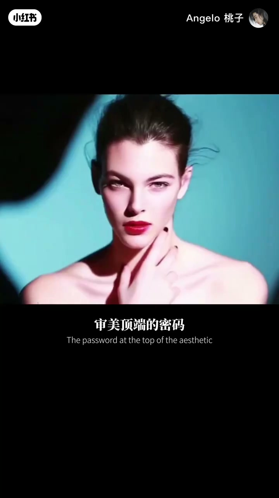
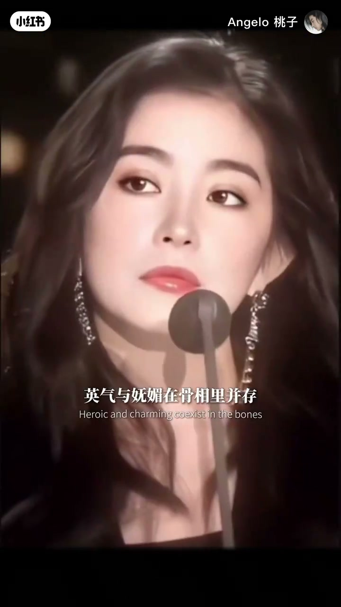

内容要点
「Angelo 桃子」论证：高级感美人常带「男相」骨感锋芒——在女性柔美肌底上叠加接近男性轮廓的骨骼特征，形成英气与妩媚并存的力量五官；并用面部折叠度、案例对照说明这是社会审美与视觉心理共同驱动，而非玄学。中段大量画面旁白，Whisper 分段稀疏，叙述结合字幕与画面。
知识结构
高级感常带一点男相；引用荣格等心理学语境（ASR 有误识，以画面论点为准）。
男性轮廓骨骼 + 女性柔美肌底，避免生硬压迫感。
高面部折叠度、英气妩媚并存；示例名人肖像与结构线。
雌雄同体/大女主审美回应当代对女性力量的呼唤。
「女生男相」在本片里不是贬义，而是骨相锋芒与色彩/肌底柔度的精要平衡；高级感来自结构对比，而不是单向变软或单向变硬。
00:00-01:40男相锋芒落在柔美肌底上
开场提问：为什么高级感美人常带一点男相？作者否认玄学，转向骨相与视觉心理。画面用高对比肖像说明「接近男性轮廓的骨骼特征」，同时强调要落在女性柔美肌底上，避免生硬压迫感。
中段用多组侧脸与正面案例展示英气与妩媚并存——力量五官的核心是骨相锋芒与色彩浓度的平衡，而不是单纯「长得像男生」。

01:40-03:22折叠度、跨性别边界案例与社会驱动
作者用虚线示意极高的面部折叠度，并举出跨性别边界的极端骨相案例（如高个子、刚硬轮廓却带空灵气质），说明雌雄同体的极致可以超越简单性别二分。
收束：男生女相与大女主联姻并非偶然，而是社会审美变迁与视觉心理共同驱动，回应当代对女性力量的呼唤。口播末句在「这种力量」处收住，留白给观众。

完整转录（23段）
以下文本由 Whisper medium 模型自动转录，可能存在少量识别误差，已尽可能修正。
为什么所有高级感的美人
都带有一次男相
这不是玄学
心理学容格提出过的
第二大斯文顿
则直接跨越性别边界
179公分的大骨架
刚运的轮廓
没眼间却透著一股空灵的仙气
让人意识到
雌雄同体的极致
是超越性别之分的存在
这就是力量五官的核心逻辑
骨相锋芒与色彩浓度的
精要平衡
雌雄同体不只长在脸上
男生女相与大女主的联姻
也并不是偶然
它是社会审美变迁
与视觉心理学共同驱动的必然
它精准回应了
当代对女性力量的呼唤
这种力量